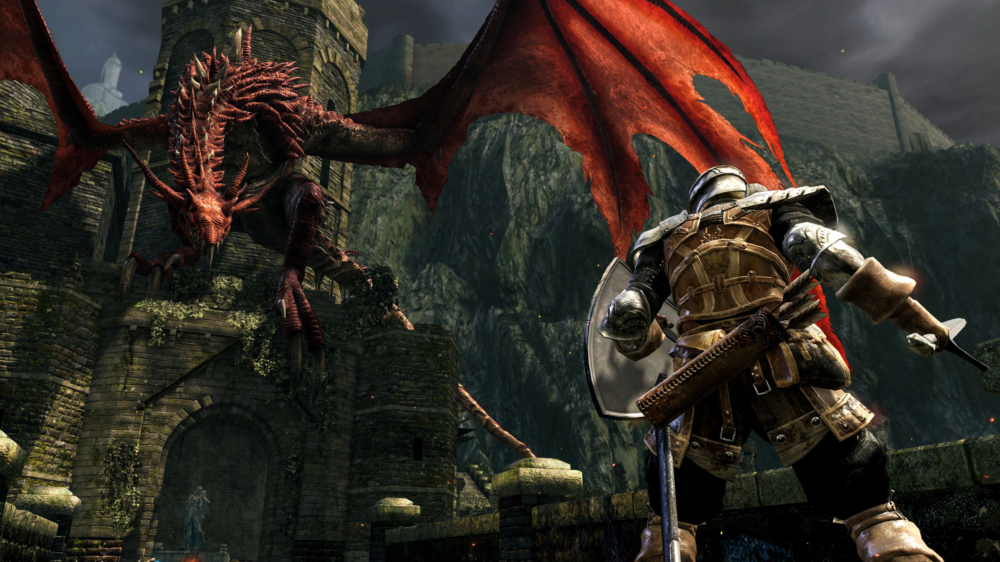
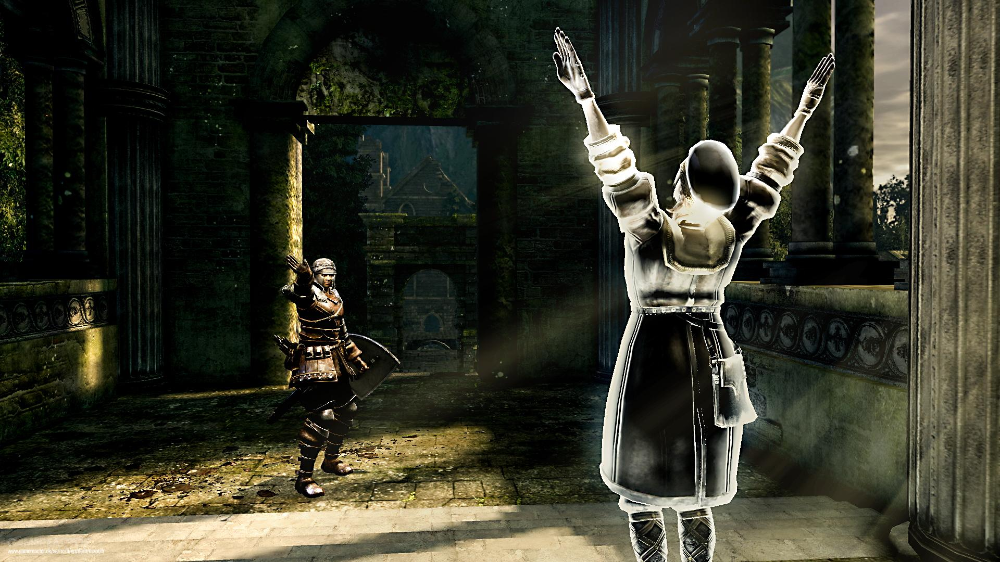

Dark Souls é realmente um jogo tão difícil quanto falam? Você que está no mundo dos jogos há um tempo considerável já deve ter ouvido falar de Dark Souls, cuja fama é de 'o jogo mais difícil de todos'. Porém, hoje eu gostaria de descrever e relatar um pouco sobre esse jogo, desmentindo mitos e contando o porquê de ele ser tão apontado como um dos jogos mais difíceis de todos os tempos.
Introdução ao jogo
Dark Souls é um RPG de ação que se passa em um mundo medieval sombrio cheio de desafios, no qual o objetivo é explorar um universo vasto, com uma história não intrusiva, e derrotar os chefes e desafios pelo caminho. Mas você se pergunta: 'Por que falam que é tão difícil?' e o motivo é simples: Você morre TODA HORA. Não é exagero dizer que, no final da sua jornada, você morreu mais de mil vezes, e apenas por esse simples fato as pessoas dizem que é um jogo difícil de se jogar (<---ironia pura).

Mas porque tem gente que gosta disso?
Mas por que tem gente que gosta disso? Os fãs do estilo conhecido por SoulsLike gostam do jogo por conta de sua dificuldade. Dark Souls é feito para você, jogador casual que gosta de Mario e Stardew Valley, morrer toda hora. Particularmente, a primeira vez que eu joguei Dark Souls 3, eu morri dezenas de vezes no boss inicial. Apesar da fama de jogo difícil, Dark Souls é uma ótima experiência, mesmo a história não sendo parte essencial da gameplay. Todos que zeram este jogo o apreciam e o admiram. Muitas vezes, as pessoas desistem por não aprenderem a jogar no início, ou por se irritarem facilmente durante a gameplay, mas errar e contornar esse erro é o que torna a experiência de jogar Dark Souls algo único. Se você já tentou jogar e não gostou porque morreu muito rápido ou não entendeu como funcionam as mecânicas do jogo, fica o incentivo para você jogar com mais atenção, para que compreenda o comportamento de cada inimigo, a mecânica de cada arma, armadura, acessório. Ao longo do jogo, se o desafio estiver muito grande, você pode convidar um amigo para te ajudar em algumas partes e, por fim, você pode desfrutar de um jogo que é a obra-prima dos jogos de Action-RPG. 
É realmente tão dificil assim?
Sinceramente, não. Dark Souls ou jogos difíceis são apenas um estilo muito interessante de jogo, em que ele se repete muitas vezes por conta das mortes, te faz ficar empolgado com a próxima tentativa e te motiva a continuar tentando. Uma vez, um filósofo do século IV disse: 'Dark Souls é como a vida, você cai, cai e cai, mas uma hora você consegue passar pelos desafios'.